Diagnosis
& Audit
I audit the product end to end — funnel, architecture, interface and the data you already have — and come back with what is actually broken and the order to fix it.
Diagnosis & auditEvery screen asks someone to decide whether to keep going. Understanding that decision — what they look for, what they ignore, where they give up — is the work. These are the four ways I put it into practice.
I audit the product end to end — funnel, architecture, interface and the data you already have — and come back with what is actually broken and the order to fix it.
Diagnosis & auditWireframes with real copy first, approved before any visual design touches them. Then the interface, then the build — on the platform you already have.
Redesign & interfaceTokens, components and templates that hold up once somebody else is using them — including the ones authored in a CMS instead of written in code.
Design systemsLogo, palette, typography and the manual that keeps them consistent once I’m not in the room. Built from zero, for platforms with no visual language of their own.
Brand identity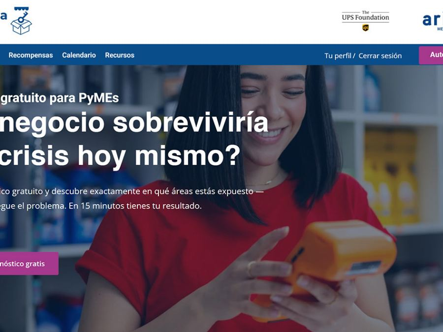
A learning platform whose funnel was broken end to end. 213 assessments submitted, 92.6% completion, and the first real result the platform ever returned.
Go to case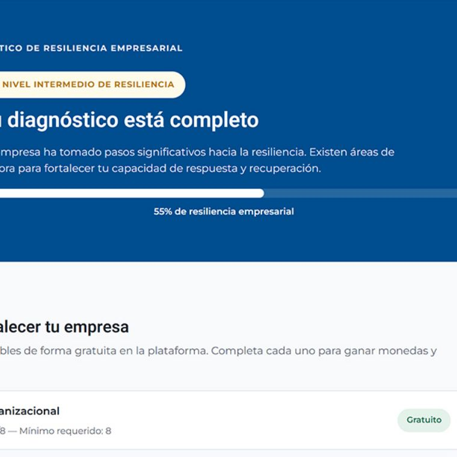
A score broken into three resilience pillars, so the result points at a course instead of a number.
Go to case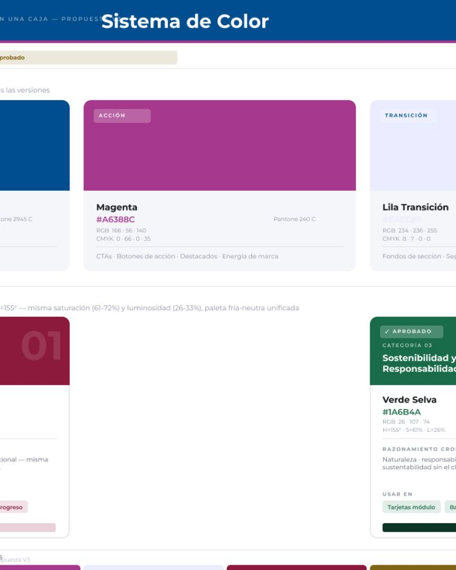
No logo, no palette, no typographic decisions — and a webinar on Monday. That deadline became the forcing function.
Go to case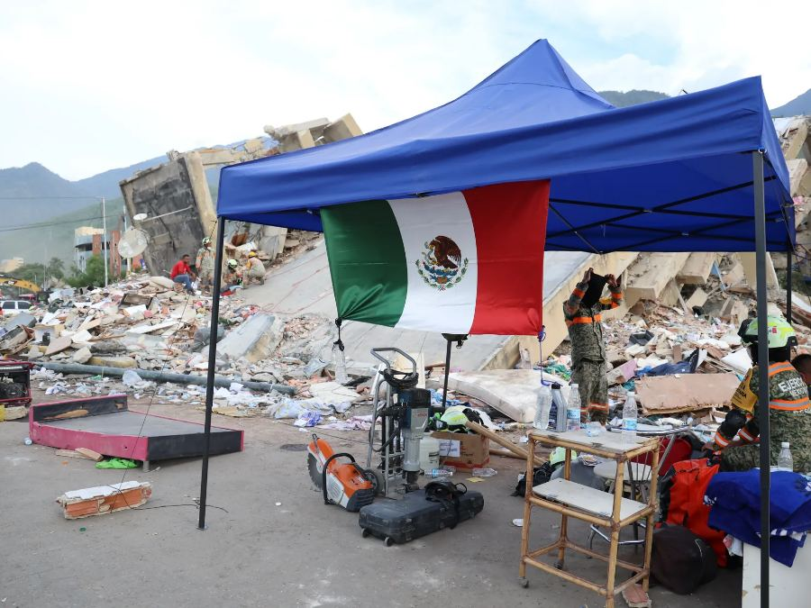
The homepage was doing two incompatible jobs at once. Splitting authority from donation turned a redesign into a reusable per-campaign template.
Go to case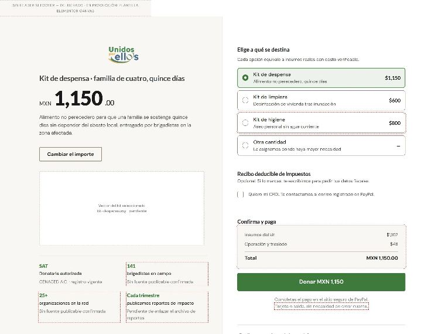
Context and form on one screen. Scoped CSS and container queries, so it survives inside a purchased theme.
Go to case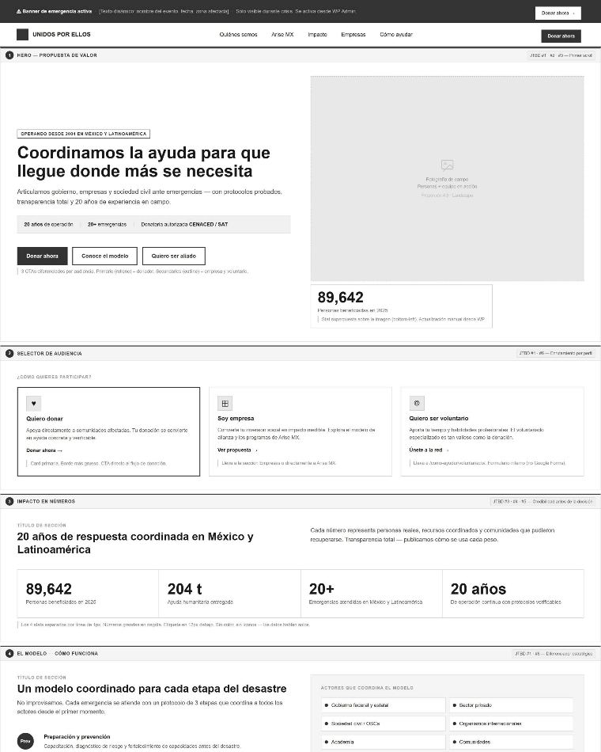
Structure and words get approved before the design system touches anything. Otherwise the feedback is about a button colour while the argument of the page is broken.
Go to caseOn the CENACED work the prototypes annotate themselves: every number without documentary backing gets a red dashed outline drawn straight into the mockup, so the design review doubles as a data review. Four figures are being held back that way right now.
How that works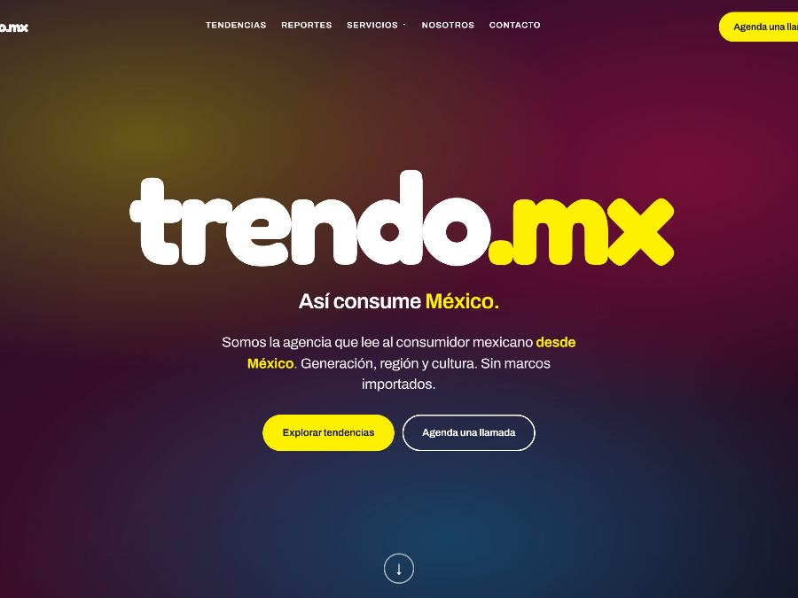
The best research in its sector, invisible in search. 40,000 downloads a year behind a login turned a traffic diagnosis into a capture problem.
Go to case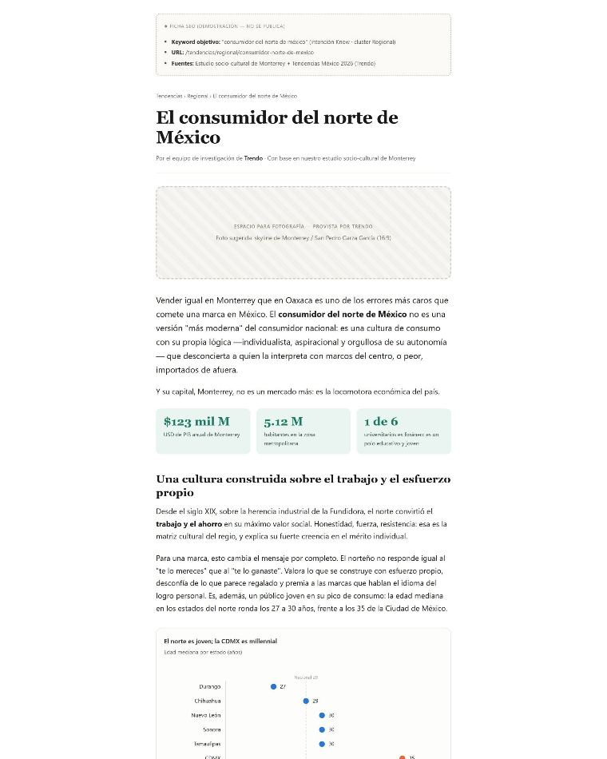
Years of research already written and unreadable to a search engine. The engine is a procedure, not an editorial calendar.
Go to case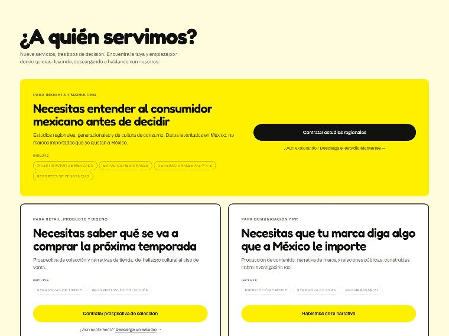
Nine services collapsed into three questions a visitor already knows the answer to about themselves.
Go to caseI'm a product designer working out of Mexico. Most of what's here was designed and shipped without a developer, on platforms that were already chosen before I arrived. I like the projects where the brief is wrong and finding that out is the job.
Get in touch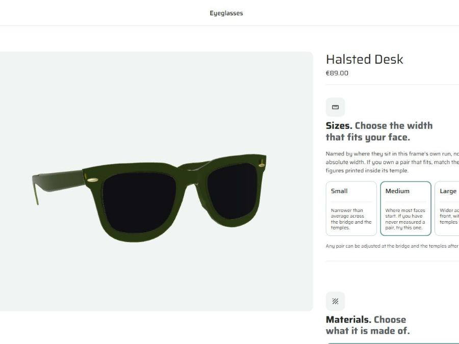
An eyewear product builder whose behaviour is authored in the CMS, not written into the storefront. Two categories, 31 looks, one dependency that proves the model.
Go to case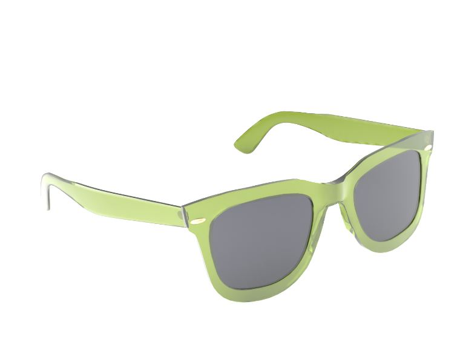
The frames were built in Blender and exported to glTF, so the customer turns the actual object instead of clicking between flat shots.
Go to case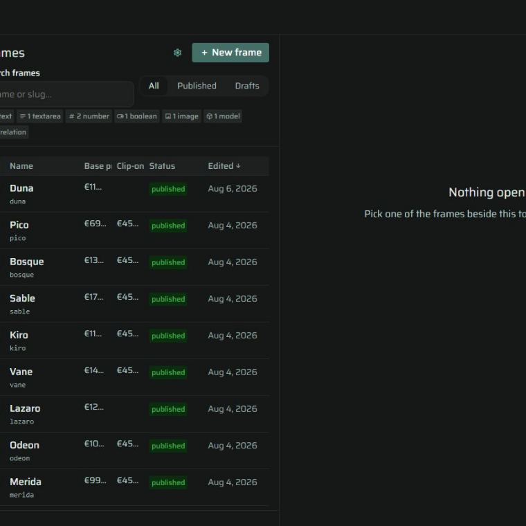
Rejected, conflicted and warned are different situations. Most tools collapse them into one red box.
Go to case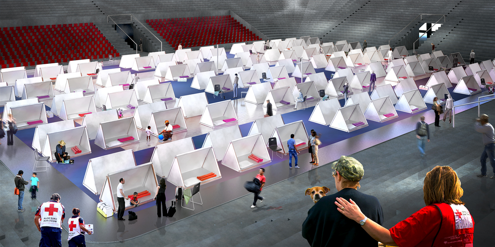
Mexico's civil protection manual specifies square metres, litres and toilets — then states that no model exists for laying the space out. The layout that was missing, and the furniture to build it.
Go to case
"Protect the family's privacy as far as possible" is unenforceable. A screen module turns it into a line item someone can count off a truck.
Go to caseI take on a small number of projects at a time — product design, UX, and the brand work around them. If you have a platform that isn't doing the job it was built for, that's usually where I'm useful.
Start a conversation